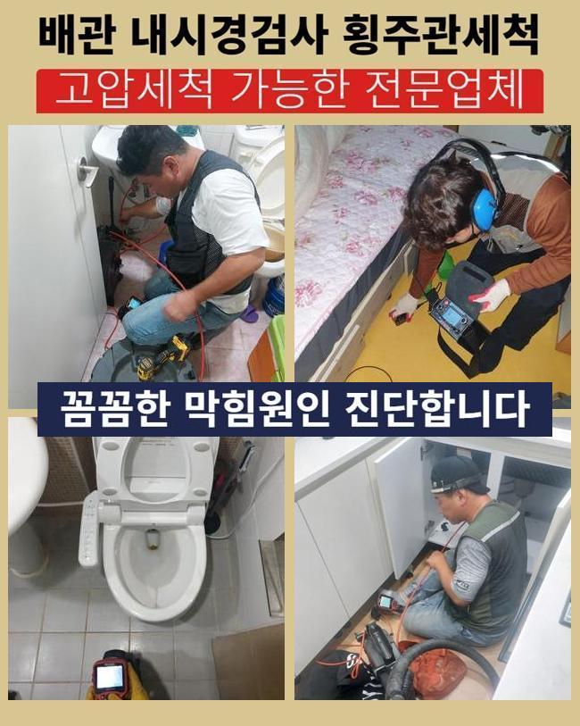
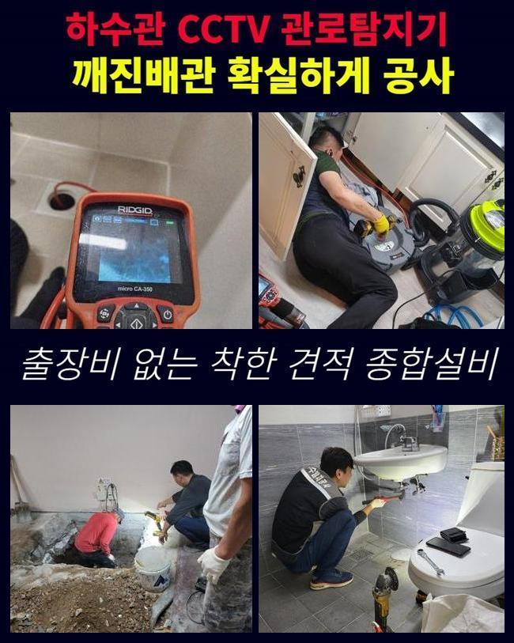
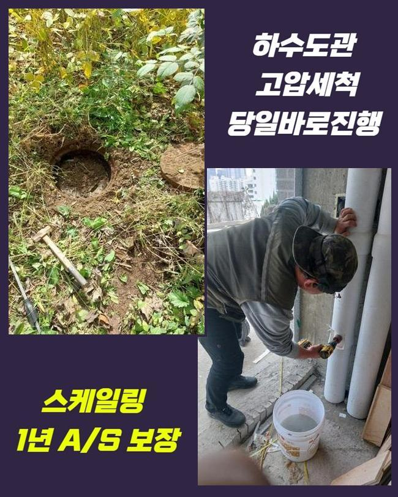
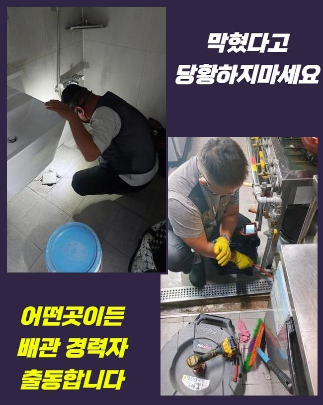
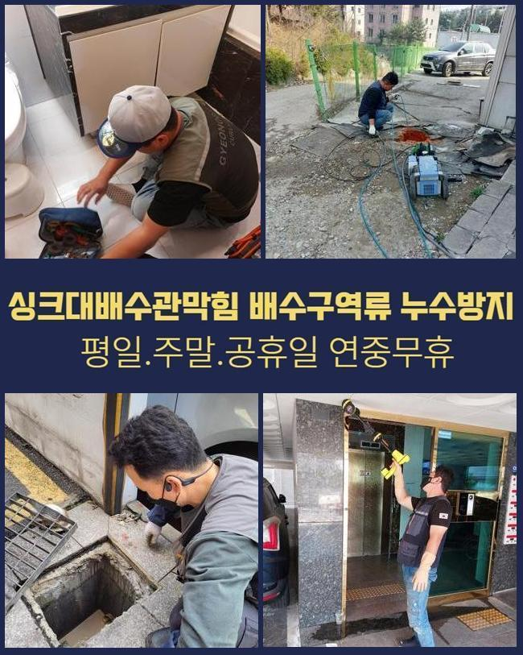
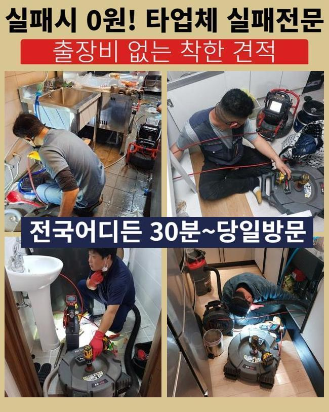

🏠 구리시 사노동씽크대역류 아천동 하수구뚫는업체 설비
용인 싱크대막힘 전문 시공 후기

📋 작업 개요
- 위치: 용인
- 서비스 유형: 싱크대막힘, 하수구막힘, 배관막힘, 역류해결, 뚫는업체, 배관청소, 고압세척
- 작업 일시: 2025. 5. 17. 11:09
- 업체명: 하수구수사대 (010-5615-2118)
🔍 문제 상황
구리시 사노동씽크대역류 아천동 하수구뚫는업체 설비
얼마전 오피스의 씽크볼에서 생겨난 통수오류를 시정한 예시를 소개할 예정이에요
이해하기 쉽고 실용적인 내용들이 많으니 같이 살펴보아요
사무실이란 스팟에서 야기된 일이다 보니 자가조치들로 해결하려는 노력이 고스란히 발견되었어요
전문인은 수리계획들을 어떠한 절차로 수행하는지 더나아가 하수관을 관리하는 꿀팁도 이해가 가능하도록 설명할게요!
의뢰인은 이용할때 조리를 하는 현장이 아니므로 막혀버리는 문제들이 없을것이라 생각했다고 전해주셨어요
사무실이라 함은 음식을 쓰지 않는 공간이라서 철저히 청소들이 결여된 사례들이 많은데요
저희의 전문가들은 기기들을 준비해 방문을 드려봤어요 도착하고서 각 관로들을 관찰했습니다
구석구석 확인하니 역류되는 문제는 없었지만 아주 조금씩 내려가는 광경이 눈에 들어왔어요
배수 정체 시에는 갑작스럽게 고이게되고 역류해버리는 증상들이 생기게 됩니다

🔎 원인 분석
💡 전문가 진단: 정밀 진단 장비를 사용하여 슬러지의 고착 여부를 판명하고 타격/세척 작업을 실시했습니다.
우선은 석션기계로 일컫는 기기를 사용하여 입구 근처의 하수들을 흡입시켰어요
석션장치는 점검을 해주기 이전에 선명한 송출을 위해서 이용되고 작은 잔해를 제거할때 효과좋은 성능을 보입니다
석션기기에 오수들이 담겨있었지만 배수구로 느린속도로 내려갔어요
석션기 사용 이후엔 내시경기기로 심층부까지 확인해주었어요
내시경 라인을 삽입하니 잔해물들이 잔존하여 배수공간이 좁혀진 상황이였습니다
요리들을 하지못하는 곳인데 어째서 이물들이 쌓이게된건가 의문이 들 수 있겠으나 사무공간일 경우에는 철저히 청소들이 이뤄지지않는 경우들이 다수입니다
일단은 과자나 커피 잔해물 오일류들이 흡착되어 슬러지이물을 만듭니다
내시경기기로 싱크대쪽을 확인하며 샤프트기기로 기름들을 분해하며 천천히 배수관을 세척하니 공간이 생기며 배수라인이 복구되기 시작했는데요
기름들은 송출 시 빨간 색깔을 띄게되어 기름성분이 모조리 사라진다면 화면상으로도 환골탈태되는 광경을 관찰할 수 있습니다
스케일링을 실시했으나 물이 그럼에도 제대로 안빠지는 상황이였습니다
우선은 수돗물을 따로 받은 다음 한꺼번에 부어보니 특정한 위치에서 고이며 통수장애가 나타나는 트러블들이 존재했습니다

🔧 작업 과정
오수가 흐름이 원천중단되었단건 놓친 요소가 존재한다는 것을 방증하는것이죠
슬러지말고도 여타 트리거들이 분명하다는 걸 가르키기에 외측라인까지 들여다볼 필요성이 대두되었어요
저희전문진은 만성적인 개수대 트러블의 까닭을 찾을 목적으로 내시경기기의 줄을 깊게 투입시켰습니다
그 와중에 알게된것은 관로의 모서리가 하단에 매립되어 있지 못하고 바깥에 노출되어 설치되어진 사실이었는데요
실내에서 내시경장치로 관찰하는게 어려운 탓에 바깥에서부터 역으로 투입하게끔 구멍들을 뚫어주고 해당 지점에 내시경 내시경 선을 삽입했죠
내시경케이블을 투입하니 이물들로 좁혀진 배수길을 찾아냈어요
사무공간에서는 원래의 배수관이 이어져있는 모습이 아니였고 욕실 쪽으로 가는 라인과 외부로 빠져나가는 상태였습니다
해당 지점을 넘어가니 세면대로 올라가는길에 사이즈가 컸던 오염물이 배수관을 막아서고 있었어요
싱크대쪽의 관로가 아닌 예상못한 지점에 큰 이물이 자리하고 있어 찾아주기까지 시간들이 꽤 소요되었지만 결국 계속적인 배수관의 주된 연유를 찾아냈는데요
수회에 걸쳐 스팟을 검수하고 점검해야하는 지점의 라인을 타공하여 폐기물을 배출해주었는데요
이물의 경우 각진 고무같은것이였는데 언제 쓰인건지 알 수 없었지만 크기까지 상당한 수준이였고 한 라인에 박혀있으면 통수되는것이 불가능에 가까운 물질이였죠
싱크대쪽의 하수도와 통수오류를 불러일으키는 이물질들도 사라지게하는 단계를 완료하니 흐름들이 복구되었고 시정이 완료됐죠
최종적으로 의뢰인분은 관로에서 문의하셨어요 저희들이 확인했지만 관로에서 발생하는것을 확인하게되었어요
트랩부품에 균열들이 발견되었어요 현장에서 정리하고 새것으로 교체도 오차없이 해드렸습니다
최종적인 검수를 실시해보고자 탕비실내부의 싱크대쪽에 수도를 틀어 내려보니 처음관 다르게 답답한 기색없이 흐르게되었어요
골치아팠던 배관정체도 여지없이 바로 잡혔어요


✅ 작업 완료
다행스럽게도 고객님을 괴롭혔던 문제의 까닭들을 추적하여 결국 막힌 까닭들을 찾게되었고 수도 사용에 있어서도 가능하게되었어요
위같이 고객분들이 추후에도 고생하시지않게 배수정체 시정을 마치게되었어요
사용하실때 배수구로 오일들과 잔해들이 빠지지않도록 관리해주시고 점검도 때에 맞춰 해주셔야 해요
저희업체는 재발위험이 제로인 작업계획에 몰두하고 있어요 이에 작업하면서 다녀간 다음에 청소해준 부분에서 재발된다면 다시 찾아뵈어 A/S서비스도 지원합니다
하수관이 막히게되어 전문가 호출을 염두에 두고 계시면 저희업체에게 문의하시는건 어떠실지요?



⚠️ 주방 싱크대 배관 막힘 예방 수칙
- ✅ 기름기가 묻은 식기나 프라이팬은 설거지 전 키친타올로 반드시 기름때를 닦아내세요.
- ✅ 주기적으로 싱크대 개수대에 뜨거운 물을 가득 받아 한 번에 내려 배관 내부 기름을 씻어내세요.
- ✅ 배수구 거름망을 미세한 필터로 사용하시고 음식물 찌꺼기가 틈으로 새어 들지 않게 관리하세요.
- ✅ 베이킹소다와 식초를 뜨거운 물과 함께 일주일에 한 번씩 부어주면 배관 살균과 막힘 예방에 좋습니다.
💡 핵심 정리
- 확실한 장비 작업(내시경 점검 및 샤프트 스케일링)으로 원인을 뿌리 뽑습니다.
- 작업 후 1년 이내에 동일한 부위 재발 시 100% 무상 A/S 서비스를 보장합니다.
- 서울 · 경기 · 인천 전 지역에 24시간 언제든 긴급 출동할 수 있도록 항시 대기 중입니다.
❓ 자주 묻는 질문 (FAQ)
🚨 용인 싱크대막힘 문제로 고민이신가요?
정확한 원인 진단과 확실한 시공으로 재발 없는 해결을 약속드립니다.
24시간 긴급 출동 | 서울 · 경기 · 인천 전지역 | 1년 내 재발 시 무상 A/S